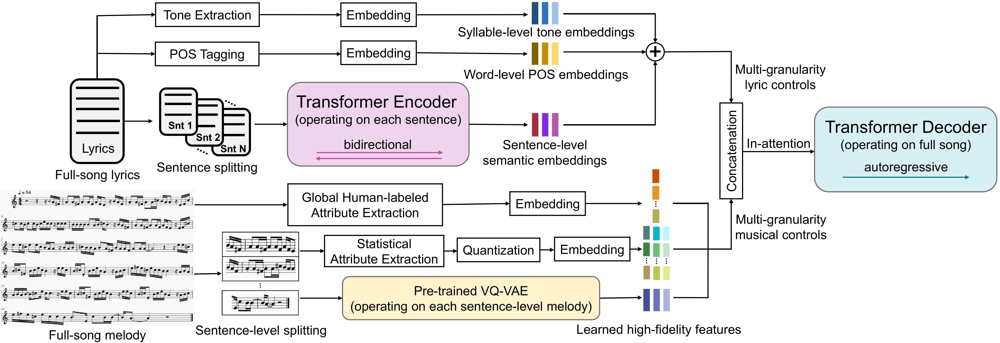

| Li Chai, Donglin Wang |
|
Westlake University Accepted at AAAI 2025 |
|

|
| Lyric-to-melody generation is a highly challenging task in the field of AI music generation. Due to the difficulty of learning strict yet weak correlations between lyrics and melodies, previous methods have suffered from weak controllability, low-quality and poorly structured generation. To address these challenges, we propose CSL-L2M, a controllable song-level lyric-to-melody generation method based on an in-attention Transformer decoder with fine-grained lyric and musical controls, which is able to generate full-song melodies matched with the given lyrics and user-specified musical attributes. Specifically, we first introduce REMI-Aligned, a novel music representation that incorporates strict syllable- and sentence-level alignments between lyrics and melodies, facilitating precise alignment modeling. Subsequently, sentence-level semantic lyric embeddings independently extracted from a sentence-wise Transformer encoder are combined with word-level part-of-speech embeddings and syllable-level tone embeddings as fine-grained controls to enhance the controllability of lyrics over melody generation. Then we introduce human-labeled musical tags, sentence-level statistical musical attributes, and learned musical features extracted from a pre-trained VQ-VAE as coarse-grained, fine-grained and high-fidelity controls, respectively, to the generation process, thereby enabling user control over melody generation. Finally, an in-attention Transformer decoder technique is leveraged to exert fine-grained control over the full-song melody generation with the aforementioned lyric and musical conditions. Experimental results demonstrate that our proposed CSL-L2M outperforms the state-of-the-art models, generating melodies with higher quality, better controllability and enhanced structure. |
Given lyrics:
<Chorus> 红颜一声叹 人生过半为难 风雨来作伴 日月沧桑变幻 彼岸花无岸 天涯洒落花瓣 忘了遥遥无期的尘缘 红颜一声叹 风花雪月谁伴 奈何君不见 尘世浮华三千 云水间再叹 渐逝妖娆容颜 终是红颜情断过前川 <Verse> 昨日梨花寒 抹泪风中流转 那千回思念是寒雾浓烟 三生三世的温柔是我今世眷恋 恍然一梦似风飘远 <Chorus> 红颜一声叹 人生过半为难 风雨来作伴 日月沧桑变幻 彼岸花无岸 天涯洒落花瓣 忘了遥遥无期的尘缘 红颜一声叹 风花雪月谁伴 奈何君不见 尘世浮华三千 云水间再叹 渐逝妖娆容颜 终是红颜情断过前川
Melody :
Singing :
Given lyrics:
<Verse>
踩着情绪来的表情狰狞
不死不休没一刻会安心
不达目的不肯安宁 好想安静
这一刻好想变成颗砂砾
涨潮随着海水四处而去
我逃离有你的 目的地
<Insertion>
没有一个温暖的拥抱
你在我的耳边只有絮叨
同样的话语说了几次 我要睡着
哪怕某一刻你微笑
答应我了别再胡闹
好好的爱自己 现在开始
<Chorus>
当石沉入海底 当褪去了潮汐
当夜色也将近 当我离开你
当下起了雨滴 当化作了泪鱼
当没有了秘密 深海和你
当我变得无情 当迷失了自己
当身边是空气 当不再爱你
当突然就过期 当狂风和暴雨
当烦躁也来临 深爱过你
Melody :
Singing :
Given lyrics:
<Verse> 我还保留着一些习惯 其实是我被你而传染 比如讨厌你的讨厌 喜欢你的喜欢格外敏感 我知道你有一个习惯 每天都会听歌在睡前 随身听里每隔三天 就要换过一批无损音源 <Chorus> 你说你直到现在还在听 我上一次同步给你的 那几首歌 而上一次我们还在一起呢 如今早就分开了 你说你至始至终还在听 我上一张专辑里面的几首老歌 因为其中收录了我为你写的力作
Melody :
Singing :
Given lyrics:
<Verse> 十七岁那日不要脸参加了挑战 明星也有训练班短短一年太新鲜 记得四哥发哥都已见过面 后来荣升主角太突然 廿九岁颁奖的晚宴仪式太疯癫 来听我唱段情歌一曲歌词太经典 我的震音假音早已太熟练 然而情歌总唱不厌 <Chorus> 喜欢我别遮脸任由途人发现 尽管唱用心把这情绪歌中染 唱情歌齐齐来一遍 无时无刻都记住掌声响遍天 来唱情歌由从头再一遍 如情浓有点泪流难避免 音阶起跌拍子改变 每首歌是每张脸
Melody :
Singing :
Given lyrics:
<Verse> 寒冬已来临 我还想着你 远方的你 多穿一件衣 我知你离开 我也是不得已 亲爱的 请你照顾好自己 想起你和我 曾经的甜蜜 现在也只能 梦里把你觅 寒冷秋风 吹进了我的心里 遗憾今生 你我不能在一起 <Chorus> 梦里遇见你 如此的熟悉 可是缺少了 那份甜蜜 今生不能 相偎相依 愿你我来生 永远不分离 梦里那个你 如此的帅气 好想感受到 你的气息 若不是缘分 把你我分离 或许你我现在 过得很甜蜜
Melody :
Singing :
Given lyrics:
<Verse>
长路迢迢 思君在远方
白驹驰骋 星辰浩荡
心郁伤
浮云悠悠 归鸟辞远乡
上下求索 舒我衷肠
不回望
<Chorus>
思美人兮心若香
思美人兮月苍凉
我犹香草何来美人赏
古人不及徒留一抹香
思美人兮心自香
思美人兮梦芬芳
世人皆醉平生随沧浪
鸿飞御我九天任高翔
Melody :
Singing :
Given lyrics:
<Verse> 情人锁 的承诺 锁在桥头情似火 情人锁 深藏眷恋为你我 情人锁 手中握 锁住你我的寂寞 情人锁 梨花飞舞伴君落 情人锁 锁不住 你那当初的承诺 情人锁 锁仍在 人已走 情人锁 敌不过 岁月变迁人心落 情人锁 一念花开一念落 <Chorus> 我曾红尘度寂寞 无奈坠入红尘河 原来你只是我的过客 一寸相思一寸痛 泪别青山弃承诺 花开花落不变的是锁
Melody :
Singing :
Given lyrics:
<Verse> 云里去风里来 带着一身的尘埃 心也伤情也冷泪也干 悲也好喜也好 命运有谁能知道 梦一场是非恩怨 随风飘 <Chorus> 看过冷漠的眼神 爱过一生无缘的人 才知世间人情永远不必问 热血在心中沸腾 却把岁月刻下伤痕 回首天已黄昏有谁在乎我
Melody :
Singing :
Given lyrics:
<Verse> 走遍千山和万水 只为把美梦去追 夜里无人相依偎 感受这城市的黑 管它什么是与非 爱自己的人最美 明天有你在跟随 天塌下来无所谓 <Chorus> 我一直追追拼命追 闪耀这生命的光辉 五湖四海朋友们 在此刻来相会 我一直追追拼命追 像月下绽放的花蕊 只相信努力最难能可贵
Melody :
Singing :
Given lyrics:
<Verse>
说好恩爱到地老天荒
等你三年不知去向
一直把你放在心上
想你难眠直到天亮
人心怎能一伤再伤
感情怎可一凉再凉
情深缘浅难守身旁
哭着走到奈何桥上
<Chorus>
请送我一碗孟婆汤
喝下不再痛断肝肠
忘了我是你的新娘
忘了度过恩爱的时光
请送我一碗孟婆汤
不再贪恋红尘万丈
不受人间的情成殇
你我化蝶梁祝齐飞翔
Melody :
Singing :
Given lyrics:
<Verse> 星星在发光 风推云波浪 在我心上种下愿望 月儿在飘荡 梦就是船桨 在我心上扬帆起航 <Insertion> 世界之大会有回响 我要为你歌唱 微笑就是爱的模样 温暖的快乐的绽放 <Chorus> 我们我们 在自由的生长 阳光在天空画彩虹糖 大大的能量 我们我们 要一起去远航 用时光的翅膀去飞翔 梦就在前方
Melody :
Singing :
Given lyrics:
<Verse> 记忆里点点滴滴的快乐 遮住我心伤痛的斑驳 相爱时美好的词汇太多 艰难的适应没有你的生活 我拒绝退场又重蹈覆辙 那么多却没兑现承诺 只剩我独自含泪去漂泊 放手就是我无法选择的选择 <Chorus> 余生没有了你时光如刀割 熟悉的街道灯光在闪烁 浅浅的牵挂你是否快乐 经历着泣不成声的折磨 余生没有了你时光如刀割 一个人看着花开又花落 一个人守着月缺的寂寞 孤独的灵魂心无所依又如何
Melody :
Singing :
Given lyrics:
<Verse> 我把我的矫情先提前结束 我没资格柔弱这点我清楚 太独立自主容易被不在乎 有多少次被关注 锁不住的心始终是会逃出 进不去的心努力也是废物 不爱了的样子很残酷 好像没有什么错误 她穿着和我一样的衣服 耳环像之前送我的礼物 我的爱很坚固 何时成第三者地步 <Chorus> 你好像 没有做错是我应该主动退出 到最后是我挡住了你寻找幸福的路 我一直招你嫌弃的付出 在你面前终究还是添堵 你没错 是我把感情引进了分手的路 让我明白真心也得看清对方的面目 留不住的那些 会永远一点不让它拦阻
Melody :
Singing :
Given lyrics:
<Verse>
走在这座不属于我的城市里
来来往往陌生的人又觉熟悉
谁又真的在乎谁的心绪
到头来我只认识了我自己
时光匆匆溜走 无处安放的自由
有多少人像我一样 不让眼泪留
<Chorus>
只是想有个人来牵挂
只是想有个人说说话
只是想有个人说别怕有我呢
只想有个人等我回家
Melody :
Singing :
Given lyrics:
<Verse> 春风暖暖吹过来 好似你呀贴心怀 桃花桃花满山开 朵朵都是我的爱 蝴蝶翩翩把花采 你就是我三世的爱 等你一载又一载 只等你呀把花儿摘 <Chorus> 水绕着山山恋着水 山水相恋无怨无悔 花恋着蝶蝶吻花蕊 花蝶之恋痴情绝对 水映着山山衬着水 山水永远相依相偎 花只为蝶绽放妩媚 花蝶之恋红尘至美
Melody :
Singing :
Given lyrics:
<Verse> 我周末放假 你这个傻瓜 有没有空 陪我走走呀 其实也害怕 说出口的话 并不是我想听的话 或许一见你我就露出了笑颜 我此刻也在等你把手牵 品尝着你情话微甜 约定这午后阳光盛开的公园 暖暖空气中你的左肩 幸福温暖的感觉耶 <Chorus> 我在等你也说爱我 话到嘴边经过 你害羞 脸像个苹果嚯喔 恋上你的温柔 想对你轻声说 能不能不要再沉默
Melody :
Singing :
Given lyrics:
<Verse> 我们之间还有什么诺言 被伤害的那一天 我该拿什么换回你我的从前伊耶伊耶伊耶 我们之间已没有了永远 从分开的那一天 该如何忘记忘记所有的誓言 <Insertion> 不在她身边还有什么发言 不明白的誓言经以终结 你说我不在乎但我却为你哭 <Chorus> 就让这回忆慢慢消失不见 过去的往事如云烟 被终结的画面在爱里搁浅 只留下眼泪在缠绵 就让这回忆停在你我身边 描述这一切到永远 被遗忘的诺言我已看不见 让我待续下一个永远永远
Melody :
Singing :
Given lyrics:
<Verse>
憧憬原来已经长出芽
拼了命的眼泪没说话
这么多年都已过去啦
我的努力一直有办法
梦想如何开出一朵花
在这世上美丽不喧哗
当初不惜一切捍卫它
原来它一直等我长大
<Insertion>
等我双膝跪下 耐心观察
渺小的伟大唱吧
<Chorus>
原来风吹雨打都是一句话
提醒我自信不该放大
就算输给命运和害怕
梦都会长大
原来海角天涯都是一幅画
让我看见我怎么挣扎
逼到悬崖开出一朵花
梦想陪我长大
Melody :
Singing :
Given lyrics:
<Chorus> 任往昔的记忆不停的倒带 伤感如潮水涌上来 在街角独自发呆落寞徘徊 头顶乌云密布飘满了阴霾 看纷飞的落叶凄美了等待 一片片凋零在心海 风吹过那年那天那句对白 眼中色彩突然被掩盖 <Verse> 那一天哭红双眼求着你别离开 那一刻终于明白故事再回不来 那一次你的转身埋葬我的爱 一点一点累计着伤害 每一天都在等你填补我空白 我又该如何抗拒命运的安排 每一次梦中醒来满满的无奈 很可惜最后你选择了离开 <Chorus> 任往昔的记忆不停的倒带 伤感如潮水涌上来 在街角独自发呆落寞徘徊 头顶乌云密布飘满了阴霾 看纷飞的落叶凄美了等待 一片片凋零在心海 风吹过那年那天那句对白 眼中色彩突然被掩盖
Melody :
Singing :
Given lyrics:
<Verse> 我在做一个很美的梦 不要来叫醒我 呜呼呜呼呜呼呜呼呼呼 我在做一个很美的梦 不要来叫醒我 呜呼呜呼呜呼呜呼呼呼 我有一台时空放映机 通过它能看见我自己 嗯嗯嗯嗯 女孩长发体恤 人群中没有吸引力 她依靠紧握却失去 付出伤心被忘记 一个人整理情绪 <Chorus> 她没放她没放弃 她没放她没放弃 她没放她没放弃 她没放她没放弃 每当夜幕降临 她打开时光放映机 看着自己很熟悉 渐渐睡去 喻喻喻
Melody :
Singing :
Given lyrics:
<Verse> 一个人的夜晚 我选择了孤单 隔着窗看灯火阑珊 一个人的夜晚 我梦见了海岸 醒来时模糊的看不见 一个人的夜晚 会不会被看穿 看穿我的狼狈不堪 一个人的夜晚 平凡的很平凡 天亮了还是漏出笑脸 <Chorus> 越努力一点越幸运一些 没有什么能让你难堪 想哭的时候抱抱双肩 原来你真的可以特别勇敢 再自信一点就会有温柔眷恋 就算迟到也不算太晚 所有难过都只是客串 我的人生自己说的才算
Melody :
Singing :
Given lyrics:
<Verse> 在冷战后开始沉思 这份爱还值不值得努力 去维持 你偶尔有点小自私 我偶尔有点小固执 但世上哪两个人 能百分百的合适 你拥抱我深情表示 闹情绪是浪费生命的事 要停止 爱应该像座许愿池 可以让梦想变真实 每一次互相体谅 都会是幸福种子 <Chorus> 你的手是最暖的围巾 呵护我度过最冷的情绪 我的眼是最亮的晨星 当你陷入了困境就会温柔指引 爱是最暖的围巾 让心灵更柔软也更美丽 当我们不知不觉放下自己 相爱多轻松甜蜜
Melody :
Singing :
Given lyrics:
<Verse> 今天是什么天气 为什么比平常更压抑 我又想起了你 想靠近你 靠近你耳朵讲一些甜蜜的耳语 我又忘记今天是星期几 可我却没有忘记 在我的世界里 涂彩虹的颜料里 浪漫它永远不会停息 <Insertion> 对不起 我不是故意 我也不玩那些游戏 我只想 每天可以和你黏在一起 <Chorus> 我想做一只懒懒懒懒懒懒的猫咪 可以随心所欲被你拥抱在怀里 侧耳倾听你温柔音律 笑容突然很洋溢 躺在你的怀里
Melody :
Singing :
Statistical Musical Attributes:
| • Original | ||
|---|---|---|
| • Increasing Align | ||
| • Reducing Align | ||
| • Increasing PM | ||
| • Reducing PM | ||
| • Increasing DM, DV, DR and reducing ND | ||
| • Reducing DM, DV, DR and increasing ND | ||
| • Increasing PV, PR | ||
| • Reducing PV, PR | ||
| • Increasing MCD | ||
| • Reducing MCD |
Given lyrics:
<Verse> 秋心一季愁莫如秋叶随风流 爱与恨方休明月人独倚高楼 天凉好个秋八字倒贴在眉头 也罢凡事一壶酒 且醉且将逍遥游 <Chorus> 江湖梦幽幽不如来饮酒 千槲万斗不伤头再饮一杯否 爱恨悠悠醉不休不如来饮酒 点点愁醉醒岂在一宿
Note: The following melody serves as the ground truth, corresponding to the song melody that matches the given lyrics in our test data. For each generation, we provide three generated melodies that correspond to the given lyrics and specified musical attributes. We utilize html-midi-player to play and display the midi files.
Ground truth :
Original 1 :
Original 2 :
Original 3 :
Reducing Align 1 :
Reducing Align 2 :
Reducing Align 3 :
Increasing PM 1 :
Increasing PM 2 :
Increasing PM 3 :
Reducing PM 1 :
Reducing PM 2 :
Reducing PM 3 :
Increasing PV, PR 1 :
Increasing PV, PR 2 :
Increasing PV, PR 3 :
Reducing PV, PR 1 :
Reducing PV, PR 2 :
Reducing PV, PR 3 :
Increasing DM, DV, DR and reducing ND 1 :
Increasing DM, DV, DR and reducing ND 2 :
Increasing DM, DV, DR and reducing ND 3 :
Reducing MCD 1 :
Reducing MCD 2 :
Reducing MCD 3 :
Increasing DMM 1 :
Increasing DMM 2 :
Increasing DMM 3 :
Increasing CM 1 :
Increasing CM 2 :
Increasing CM 3 :